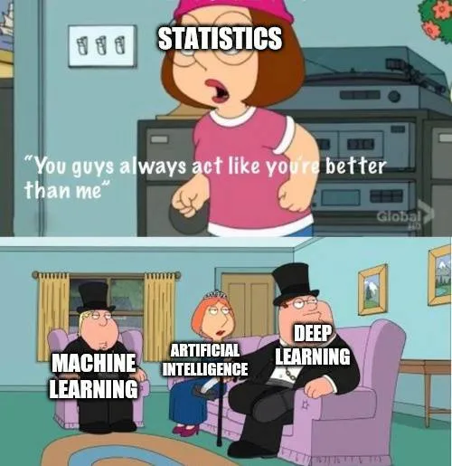
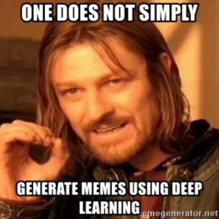
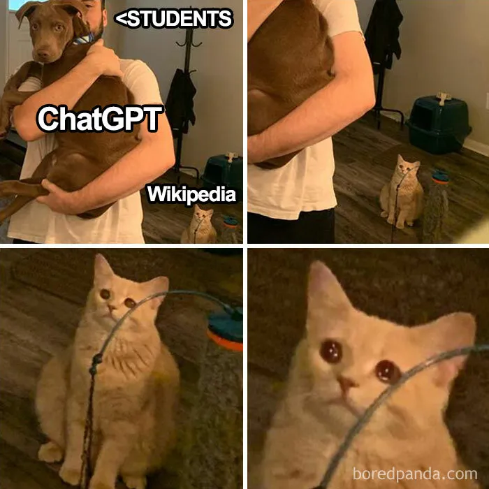

|  | ||
|  | ||
 |
 |
La inteligencia artificial generativa es un subcampo de la inteligencia artificial que se centra en la creación de modelos y algoritmos capaces de generar datos nuevos y originales.
Los modelos de inteligencia artificial generativa utilizan técnicas como las redes neuronales generativas (GANs), redes neuronales recurrentes (RNNs) y modelos de lenguaje para aprender patrones en conjuntos de datos y generar nuevos datos que sean similares a los ejemplos de entrenamiento.
La inteligencia artificial generativa se utiliza en una variedad de aplicaciones, como la generación de imágenes y videos realistas, la creación de música y arte, la síntesis de voz, la generación de texto y la creación de contenido de entretenimiento.
Algunos ejemplos destacados incluyen la generación de caras humanas realistas con GANs, la creación de música original con redes neuronales recurrentes, la generación de texto coherente con modelos de lenguaje como GPT (Generative Pre-trained Transformer), y la creación de arte visual único con algoritmos generativos.